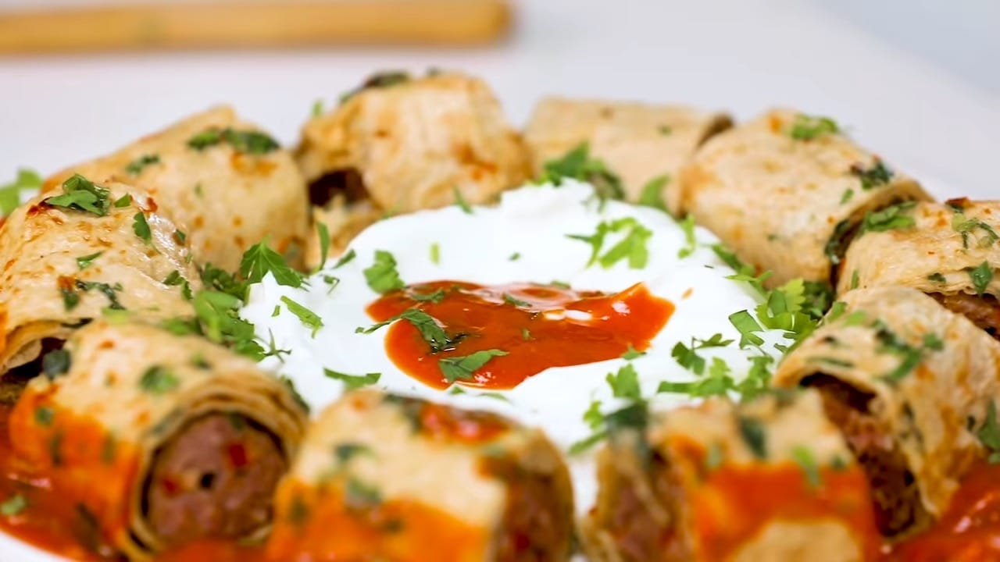

Beyti Kebab

Decription
BEYTI KEBAB is on the menu! We are going to teach you how to make this delicious recipe from scratch!
Today, I’ll teach you how to make a very special kebap recipe called Beyti. What sets Beyti apart from other kebabs is that it is a kebap wrapped in garlic-flavored lavash and sliced into perfect bites. Lavash soaks up all the juice of the kebap and with the savory yogurt and delicious tomato sauce, you can’t get enough of this beauty.
We will be cooking it in %100 home conditions but I promise you, this recipe will make your favorite kebap house jealous 😉 Enjoy today’s episode, and don’t forget to let us know what you think down in the comment section!.
Ingredients
For the kebap/kofte
- 300 g ground beef (rib), single ground (alternatively, use burger patties)
- 200 g ground lamb (rib), single ground (you can use 100% beef or 100% lamb as well)
- 1/2 red capia or bell pepper, finely chopped (use chili pepper, if you want your beyti really hot!)
- 1 clove of garlic, finely chopped
- 1 teaspoon salt
- 3 pinches of red pepper flakes
For the beyti
- 2 teaspoons vinegar
- 6 tablespoons thick, savory yogurt
- To garnish, parsley, chopped
- 4 tablespoons sunflower oil (or any seed oil)
- 4 cloves of garlic, crushed
- 10 sprigs of parsley, chopped
- 8 tablespoons water
- 2 pinches of red pepper flakes
- 2 pinches of salt
- 2 large lavash bread
- 9-10 tablespoons tomato puree
- 2 tablespoons butter
Steps
- Place four metal shish (skewers) into the freezer and let them sit for at least half an hour. Freezing helps the meat to adhere better to the skewers and prevents falling apart. If using wooden skewers, soak them in water for an hour.
- Mix all the ingredients for the kebap in a bowl and knead for 3 minutes. Push with your knuckles to combine all the flavors.
- Divide the mixture into four equal portions.
- Heat a shallow cast iron pan on high heat.
- Using your fingers, mould each quarter of the meat mixture around the skewers by slowly pushing and squeezing from the top to the bottom. Wet your hands now and then with cold water so that the meat does not stick. Leave a 3 cm gap both at the top and the bottom of the skewer. If the meat mixture separates from the skewer, refrigerate for 15 minutes. Repeat the same steps for the rest of the mixture. If you are using triangular or square skewers, make sure to distribute the kebap mixture evenly around and through the skewers. Otherwise, because of the gravity, the heavy sides will always turn and face the heat, resulting in unequally cooked kebaps.
- Traditionally these are cooked on the barbecue, but I have an alternative technique for you to achieve the same great taste at home using a cast iron pan.
- When the pan is hot, place your skewers on the sides making sure that the kebap does not actually touch the pan. This way, your kebaps will cook with the heat rising from the pan, but I have to warn you, it is going to be smoky.
- Flip the skewers frequently. They will be cooked for 7 to 8 minutes.
- Meanwhile, heat a large frying pan on medium heat and pour in the sunflower oil.
- Add in the garlic and sauté until the color starts to change.
- Add in the parsley and water. Season with salt and red pepper flakes.
- Soak both sides of the lavash bread into this delicious mixture and lay it on your counter. You can spread the mixture with a spoon if there are any dry parts.
- Place two of the kebaps on the lavash (one, if your lavash is smaller) and pull out the skewers.
- Wrap the lavash around the kebap and slice it into bites. Save the excess lavash pieces for the serving. Repeat for the other skewers.
- Heat what is left on the pan and add the tomato puree, vinegar, and butter. Season with salt if necessary and cook for a minute.
- For the serving, place the bites to form a ring on a large dish. Lay the lavash pieces at the center and top with the yogurt.
- Pour the sauce on the sides of the lavash and the yogurt. Garnish with parsley and beyti is ready to make you believe in love again (in case you ever stopped ☺️)